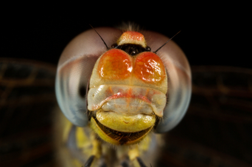

jquery.rsRefPointer plug-in demonstration
* Move your mouse over the yellow items, or click on them
* Watch how the arrows auto update when you resize your browser to a smaller size

- KingdomAnimalia
- PhylumArthropoda
- ClassInsecta
- OrderOdonata
- SuborderAnisoptera